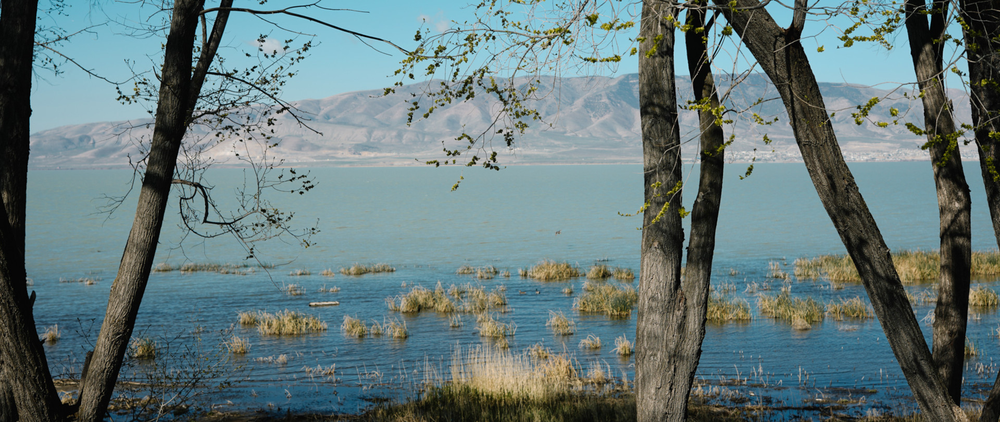
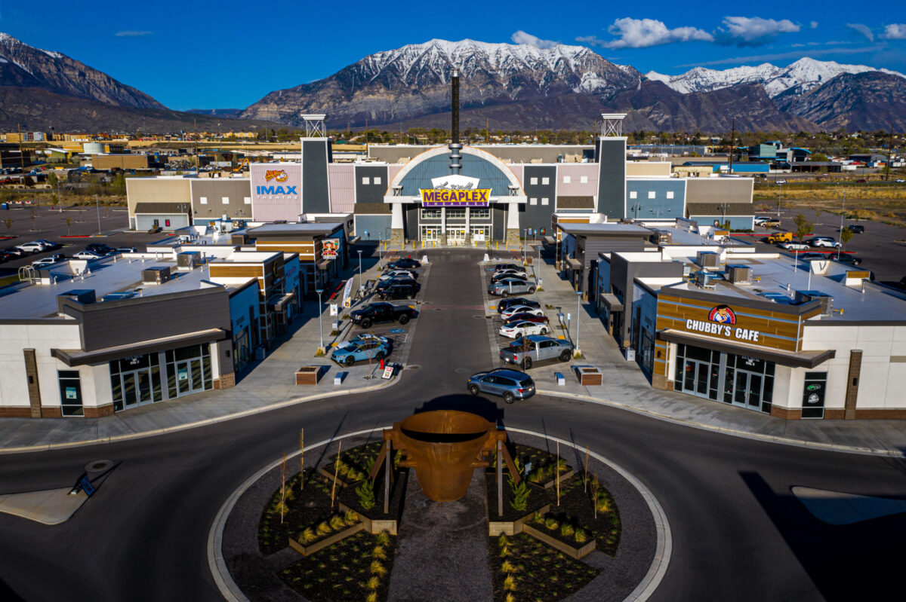

Vineyard is a city in Utah County, Utah, United States. It is part of the Provo-Orem Metropolitan Statistical Area. The population grew from 139 at the 2010 census to 12,543 at the 2020 census making it the fastest growing city in Utah and one of the fastest-growing cities in the nation during that timeframe.

Vineyard has wonderful scenic views. The Beauty of the mountains and lake is unmatch. Utah Valley is a magical place to settle downa and an even better place to build a business community.
Several of our community membors are finding success and support with the chamber at Utah Plaza. Some of Utah's most popular franchises can be found here!
There are several new and thriving Business. There are over 3-4 new businesses under custontruction, and plans to bring more devoloplemt. "Utah City", Vineyard's next plan to bring deveoplment to the area.
With the population skyrocketing, there is only more need for business owners to step up.

The wonderful community, the thriving businesses, and the natual bueaty keeps us in awe. Vineyard is a perfect place to build a business and join a community. Join our Vinyard Chamber today. Protecting value is our priority.